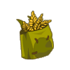

Menu barbok'you

| Niveau 19 | Sac du Paysan | ||
|---|---|---|---|
| Recettes : | Caractéristiques : | Conditions : | |
|  | 20 Epis de seigle 10 Tiges de pissenlit diabolique 3 Baves de rose démoniaque |
+6 à 10 chance +101 à 200 pods |
aucune |
| Remarques : | |||
| Le Sac du paysan se drop sur tournesol affamé dans le donjon des champs | |||
| Niveau 19 | Bob du Paysan | ||
|---|---|---|---|
| Recettes : | Caractéristiques : | Conditions : | |
| 35 Epis de seigle 15 Graine de pavot 2 Baves de rose demoniaque |
+6 à 10 sagesse | aucune | |
| Remarques : | |||
| Se drop sur le Tournesol Affamé à la fin du donjon des champs | |||
| Niveau 12 | Mitaines Mitées du Paysan | ||
|---|---|---|---|
| Recettes : | Caractéristiques : | Conditions : | |
| 25 Epis d'orge 10 Pétale de tournesol sauvage 2 Bave de rose démoniaque |
+1 soins +1 créature invocables 4 à 5% faiblesse air |
aucune | |
| Remarques : | |||
| Les Mitaines mitées du paysan se drop sur tournesol affamé dans le donjon des champs | |||
| Niveau 18 | Bottes paysannes | ||
|---|---|---|---|
| Recettes : | Caractéristiques : | Conditions : | |
| 10 Houblon 2 Feuille de tournesol sauvage 2 Huile de sésame |
+11 à 15 vitalité +1 à 5 sagesse |
aucune | |
| Remarques : | |||
| Les bottes paysannes se drop sur tournesol affamé dans le donjon des champs | |||
| Niveau 20 | Amulette du Paysan | ||
|---|---|---|---|
| Recettes : | Caractéristiques : | Conditions : | |
| 15 Orge 15 Avoine 10 Graine de lin 1 Gland |
+1 dommages +1 à 50 initiative |
aucune | |
| Remarques : | |||
| L'amulette du paysan se drop sur tournesol affamé dans le donjon des champs | |||
| Niveau 20 | Ceinturemuda du Paysan | ||
|---|---|---|---|
| Recettes : | Caractéristiques : | Conditions : | |
| 15 Graine de chanvre 10 Fleur de pissenlit diabolique 10 Tige de pissenlit diabolique 2 Huile de noix |
+11 à 15 vitalité +11 à 15 chance |
aucune | |
| Remarques : | |||
| La ceinturemuda du paysan se drop sur tournesol affamé dans le donjon des champs | |||
| Niveau 1 | Faux du usée du Paysan | |||
|---|---|---|---|---|
| Recettes : | Effets : | Caractéristiques : | Conditions : | |
| Vole : 4 à 5 PDV (eau) +11 à 15 vitalité +2 à 3 CC 11 à 15% faiblesse feu 11 à 15% faiblesse terre |
PA : 3 Portée : 1 à 1 Bonus CC : +5 Critique : 1/50 Echec : 1/50 |
aucune | ||
| Remarques : | ||||
| La faux usée du paysan se drop sur tournesol affamé dans le donjon des champs | ||||
| 1 Items | Aucun bonus |
|---|---|
| 2 Items | +10 Vitalité / +5 Chance |
| 3 Items | +20 Vitalité / +10 Chance |
| 4 Items | +30 Vitalité / +15 chance / +1 Dommages |
| 5 Items | +40 Vitalité / +20 Chance / +3 Dommages / +10 Sagesse |
| 6 Items | +50 Vitalité / +25 Chance / +5 Dommages / +20 Sagesse |
| 7 Items | +60 Vitalité / +30 Chance / +7 Dommages / +40 Sagesse |
| Bonus de la panoplie complète |
|---|
| +8 dommages +1 à 50 initiative +1 soin +1 créature invocable 4 à 5% faiblesse air +47 à 55 chance +101 à 200 pods +93 à 105 vitalité +47 à 55 sagesse +2 à 3 CC 11 à 15% faiblesse feu 11 à 15% faiblesse terre |
Dofus est un MMORPG édité par Ankama." Barbok " est un site non-officiel sans aucun lien avec Ankama.
Toutes les illustrations sont la propriété d'Ankama Studio et de Dofus. Le contenu de ce site a été rédigé initialement par Immortal, il ne s'agit que d'une remise en ligne effectuée par Eternal Games.